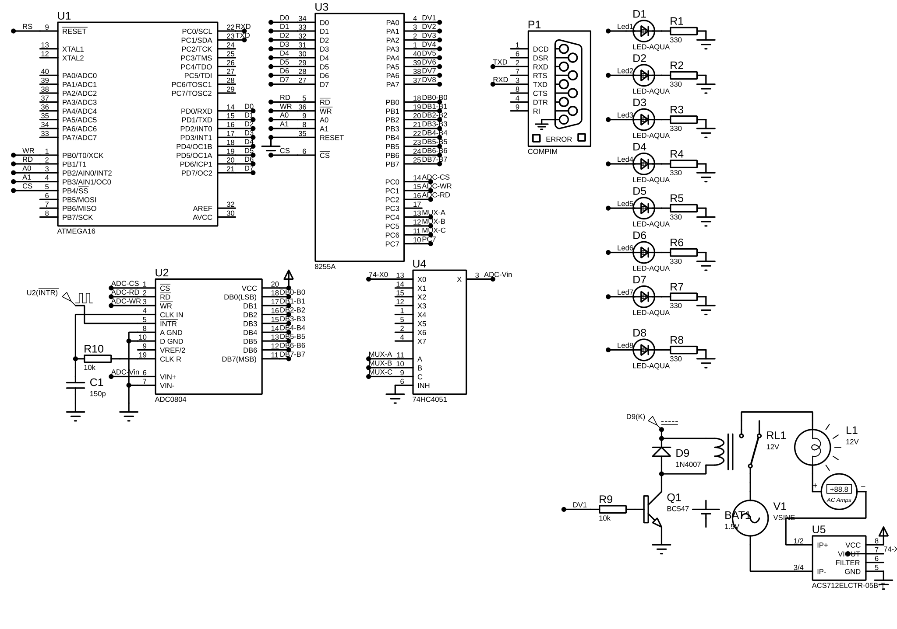

Phạm vi đề tài:
ATmega16 @ 8MHz Intel 8255 PPI ADC0804 8-bit 74HC4051 MUX 8:1 UART Frame Protocol CT Sensor xuyến Relay 5V SPDT × 8Luồng tín hiệu điều khiển (PC → Thiết bị):
Luồng đo dòng điện (Cảm biến → PC):
Firmware & Schematic hoàn tất — PCB & sản phẩm thật đang triển khai
uint8_t quản lý 8 thiết bị0x0000, RAM 0x4000, IO 0x8000cpu_bus_read/write(addr)[AA][CMD][LEN][DATA][CHECKSUM]CMD_SENSOR_DATA (9 byte payload)ACKCMD_SENSOR_DATA mỗi ~500ms (9 byte)0x82Từ lệnh điều khiển → phần cứng → phản hồi về PC:
Luồng đo dòng (Push Mode ~500ms):
cpu_bus_write(0x8000, val) → 8255 Port AHeader │ Command │ Length │ Payload │ Checksum
| CMD | Tên | Mô tả |
|---|---|---|
0x01 | SET_ALL | Đặt 8 thiết bị |
0x02 | SET_SINGLE | Bật/tắt 1 thiết bị |
0x04 | SENSOR_DATA | Push 9 byte dòng điện |
0x81 | ACK | Phản hồi OK |
0x82 | NACK | Phản hồi lỗi |
| Lệnh | Dòng điện | Kết luận |
|---|---|---|
| BẬT | Có dòng | ✓ Bình thường |
| BẬT | = 0 | ✗ LỖI thiết bị |
| TẮT | = 0 | ✓ Bình thường |
| TẮT | Có dòng | ⚠ Dòng rò |

Nhóm sẵn sàng trả lời câu hỏi phản biện